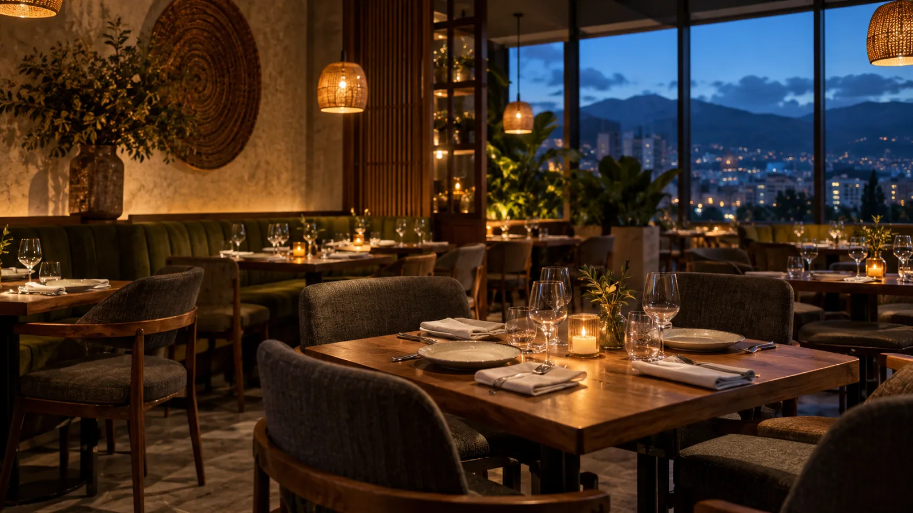

Tostadas de la huerta
Pan artesanal, tomates asados, queso fresco y hierbas.
$ 24.000

Leña de naranjo, producto de temporada y recetas que viajaron de casa en casa. Una cocina abierta donde la brasa marca el ritmo de la noche.

La barra mira a la brasa: desde cualquier mesa se ve el fuego.
La cocina de LUMBRE nació alrededor de un fogón. La chef Inés Caicedo creció entre el Pacífico y los Andes, y de ambos lados trajo la misma idea: el fuego no es una técnica, es una forma de reunir a la gente.
Cada mañana encendemos la parrilla con leña de naranjo y guayabo. Lo que entra a la brasa depende de lo que llega ese día del mercado y de los pescadores con los que trabajamos.
Naranjo para el pescado, guayabo para las carnes. El humo también se cocina.
La carta cambia con la temporada; si un producto no está en su punto, no sale.
Fuentes al centro de la mesa, como en las comidas largas de domingo.
Estos cuatro platos también viajan a casa: agrégalos a tu pedido y recógelos en el local. Debajo encuentras la carta completa del salón.
Pan artesanal, tomates asados, queso fresco y hierbas.

Pescado a la parrilla, vegetales de temporada y un toque de cítricos.

Arroz cremoso, hongos, verduras asadas y aceite de hierbas.

Chocolate oscuro, crema suave y un contraste crujiente.
Vinos del sur del continente, coctelería con frutas asadas y fermentos hechos en casa para quien prefiere no beber alcohol.
Una selección corta de Argentina, Chile, Uruguay y Colombia, pensada para la parrilla.
Cócteles de autor con fruta pasada por la brasa y destilados latinoamericanos.
Fermentos y bebidas de la casa, con la misma atención que un buen vino.
Cumpleaños, cenas de equipo, pedidas de mano o una noche con quienes llevas tiempo sin ver. Diseñamos el menú contigo y nos encargamos del resto.
Consultar fechasElige el día, el turno y cuántos vienen. Te mostramos cómo el sistema de LUMBRE busca la mesa que mejor encaja, la confirma por WhatsApp y te recuerda la cita.
Mira cómo una reserva asigna la mejor mesa, envía la confirmación, avisa a la lista de espera y libera las mesas que no llegan.